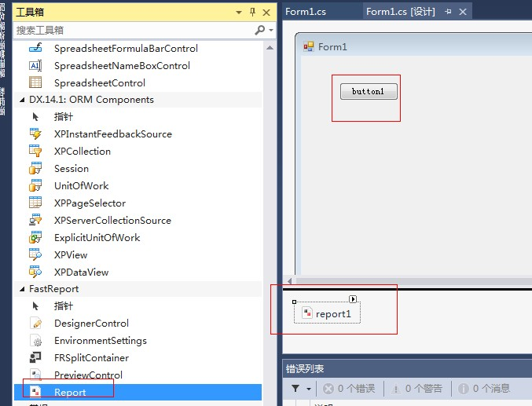
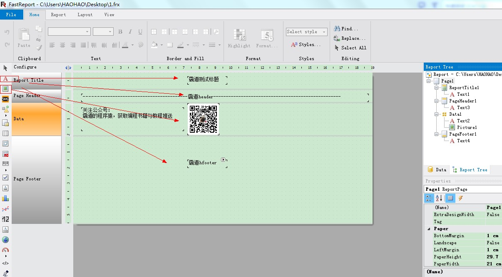
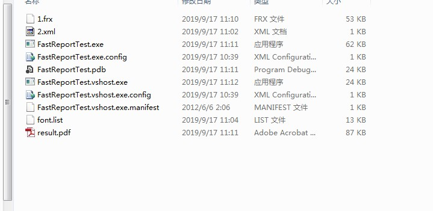
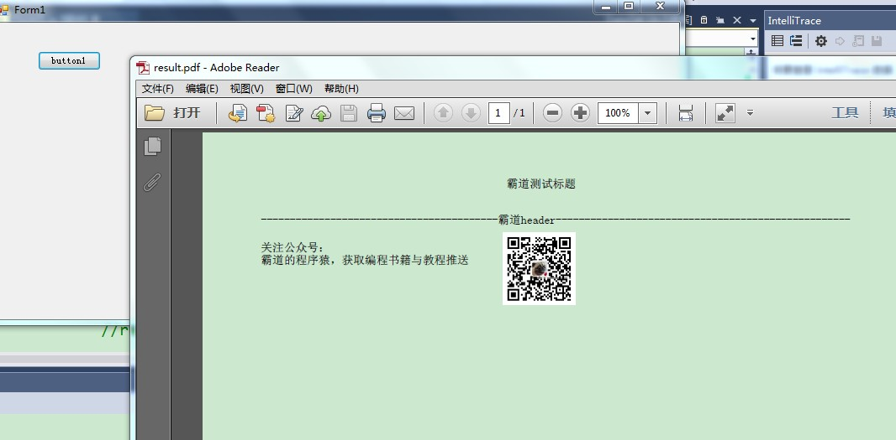

原文出处:本文由博客园博主霸道流氓提供。
原文连接:https://www.cnblogs.com/badaoliumangqizhi/p/11532615.html
原文连接:https://www.cnblogs.com/badaoliumangqizhi/p/11532615.html
场景
FastReport安装包下载、安装、去除使用限制以及工具箱中添加控件：
https://blog.csdn.net/BADAO_LIUMANG_QIZHI/article/details/100893794
在上面成功安装FastReport之后，怎样使用其实现自定义导出PDF模板并导出PDF。
实现
新建一个Winform程序，打开工具箱
拖拽 一个Report控件，在页面上再拖拽一个Button按钮。

右击report控件右上角的三角号，选择Design Report
然后在此页面设计其页面布局等。

然后点击File -Save，将其保存到上面项目目录下的bin下的debug目录下。
导出文件格式为frx文件格式。

然后在按钮的点击事件中
private void button1_Click(object sender, EventArgs e)
{
Report report = new Report();
string baseDir = System.Windows.Forms.Application.StartupPath;
var reportFile = Path.Combine(baseDir, "1.frx");
report.Load(reportFile);
//运行报表
report.Prepare();
//导出PDF报表
var file = "result.pdf";
if (!string.IsNullOrEmpty(file))
{
PDFExport export = new PDFExport();
report.Export(export, file);
}
report.Dispose();
if (File.Exists(file))
{
Process.Start(file);
}
}
运行代码，点击按钮
